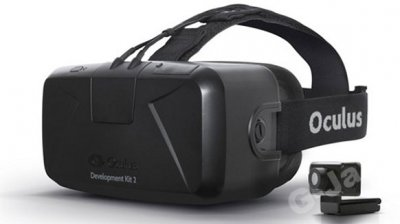

Oto lista najważniejszych gogli VR.
Gogle nie wspierające natywnie 6DOF (ang. six degrees of freedom - 6 stopni swobody, czyli Pitch, Roll, Yaw, X, Y, Z) to nie jest prawdziwe VR.
| Zdjęcie | Model | Producent | Uwagi |
|---|---|---|---|
| Oculus Rift DK1 | Oculus VR | Mimo iż DK1 nie ma 6DOF, to jest tu, gdyż jest pierwszym nowoczesnym headsetem VR. Ekran to LCD 1280x800 60Hz(640x800 na oko). | |
|  | Oculus Rift DK2 | Oculus VR | Pierwsze gogle z 6DOF, dzięki kamerce oprócz obracania głowy można przemieszczać się też w osiach X, Y, Z. Ekran to 1920x1080 60Hz (960x1080 na oko) prosto z Samsunga Galaxy Note 3. |
| Oculus Rift CV1 | Facebook/Oculus VR | Ostateczny Rift. Pierwotnie bez kontrolerów ruchowych Touch. Ekrany to 2xOLED 1080x1200 90Hz. | |
| HTC Vive | HTC/Valve | Pierwsze pełne gogle VR. Śledzeniem ruchu zajmują się 2 latarnie. Ekrany to 2xOLED 1080x1200 90Hz. | |
| PlayStation VR | Sony | Gogle działające z konsolą PlayStation 4. Śledzeniem ruchu zajmuje się PlayStation Camera. Kontrolery to stare PS Move. Ekran to 1920x1080 120Hz* (*zależy od gry) | |
| Windows Mixed Reality | Microsoft i partnerzy (HP, Lenovo, Samsung, Asus, Acer, Dell) | Pierwsze gogle wykorzystujące Inside-out tracking, czyli śledzenie otoczenia przez kamery w goglach, a nie zewnętrzne elementy. Ekrany to 2xLED1440x1440 90Hz* (Samsung ma inne.). Mam i polecam. :) | |
| Oculus Rift S | Facebook/Oculus VR | Następca Rift CV1. Zamiast 2 ekranów OLED ma jeden ekran LCD o większej rozdzielczości 2560x1440 (1280x1440 na oko). Wykorzystuje Oculus Insight - poprawione śledzenie Inside-out, a także nowy model kontrolerów Touch. | |
| Oculus Quest | Facebook/Oculus VR | Pierwszy prawdziwy headset VR standalone (Oculus Go nie liczy się, gdyż nie ma 6DOF), wykorzystuje Oculus Insight i nowe kontrolery Touch. Od pewnego czasu również obsługuje śledzenie rąk. | |
| Valve Index | Valve | Kosztujące 1000 dolarów gogle Index mają nowoczesne kontrolery Index wykrywające ruch palców, dwóm ekranom 1440x1600 (razem 2880x1600) z odświeżaniem 120 Hz (jest też tryb 144 Hz) i wyższym polem widzenia. | |
| Wszystkie modele Pimax oprócz 4K | Pimax | Nie posiadają własnych kontrolerów, lecz działają z latarniami SteamVR (Takie jak do Vive i Index), posiadają ogromne pole widzenia 200 stopni i wysokie rozdzielczości. |